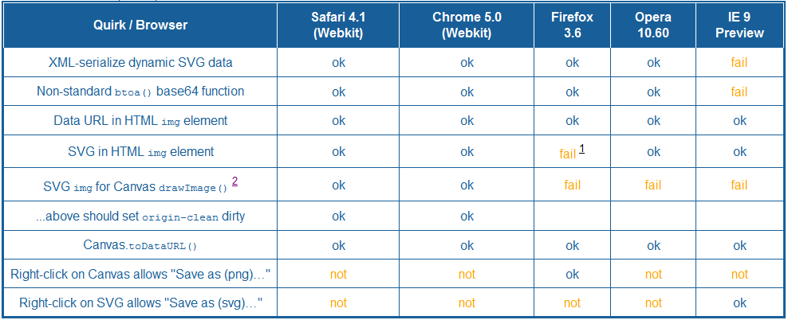

<?xml version='1.0' encoding='utf-8' ?>
<!DOCTYPE html PUBLIC "-//W3C//DTD XHTML 1.0 Strict//EN"
    "http://www.w3.org/TR/xhtml1/DTD/xhtml1-strict.dtd">
<html lang='en' xml:lang='en' xmlns='http://www.w3.org/1999/xhtml'>
<head>
	<title>SVG Open 2010: From SVG to Canvas and Back</title>

	<script type="text/javascript">
	/* Copyright (C) 2007, 2008 gnombat@users.sourceforge.net */
/* License: http://shjs.sourceforge.net/doc/gplv3.html */

if(!this.sh_languages){this.sh_languages={}}var sh_requests={};function sh_isEmailAddress(a){if(/^mailto:/.test(a)){return false}return a.indexOf("@")!==-1}function sh_setHref(b,c,d){var a=d.substring(b[c-2].pos,b[c-1].pos);if(a.length>=2&&a.charAt(0)==="<"&&a.charAt(a.length-1)===">"){a=a.substr(1,a.length-2)}if(sh_isEmailAddress(a)){a="mailto:"+a}b[c-2].node.href=a}function sh_konquerorExec(b){var a=[""];a.index=b.length;a.input=b;return a}function sh_highlightString(B,o){if(/Konqueror/.test(navigator.userAgent)){if(!o.konquered){for(var F=0;F<o.length;F++){for(var H=0;H<o[F].length;H++){var G=o[F][H][0];if(G.source==="$"){G.exec=sh_konquerorExec}}}o.konquered=true}}var N=document.createElement("a");var q=document.createElement("span");var A=[];var j=0;var n=[];var C=0;var k=null;var x=function(i,a){var p=i.length;if(p===0){return}if(!a){var Q=n.length;if(Q!==0){var r=n[Q-1];if(!r[3]){a=r[1]}}}if(k!==a){if(k){A[j++]={pos:C};if(k==="sh_url"){sh_setHref(A,j,B)}}if(a){var P;if(a==="sh_url"){P=N.cloneNode(false)}else{P=q.cloneNode(false)}P.className=a;A[j++]={node:P,pos:C}}}C+=p;k=a};var t=/\r\n|\r|\n/g;t.lastIndex=0;var d=B.length;while(C<d){var v=C;var l;var w;var h=t.exec(B);if(h===null){l=d;w=d}else{l=h.index;w=t.lastIndex}var g=B.substring(v,l);var M=[];for(;;){var I=C-v;var D;var y=n.length;if(y===0){D=0}else{D=n[y-1][2]}var O=o[D];var z=O.length;var m=M[D];if(!m){m=M[D]=[]}var E=null;var u=-1;for(var K=0;K<z;K++){var f;if(K<m.length&&(m[K]===null||I<=m[K].index)){f=m[K]}else{var c=O[K][0];c.lastIndex=I;f=c.exec(g);m[K]=f}if(f!==null&&(E===null||f.index<E.index)){E=f;u=K;if(f.index===I){break}}}if(E===null){x(g.substring(I),null);break}else{if(E.index>I){x(g.substring(I,E.index),null)}var e=O[u];var J=e[1];var b;if(J instanceof Array){for(var L=0;L<J.length;L++){b=E[L+1];x(b,J[L])}}else{b=E[0];x(b,J)}switch(e[2]){case -1:break;case -2:n.pop();break;case -3:n.length=0;break;default:n.push(e);break}}}if(k){A[j++]={pos:C};if(k==="sh_url"){sh_setHref(A,j,B)}k=null}C=w}return A}function sh_getClasses(d){var a=[];var b=d.className;if(b&&b.length>0){var e=b.split(" ");for(var c=0;c<e.length;c++){if(e[c].length>0){a.push(e[c])}}}return a}function sh_addClass(c,a){var d=sh_getClasses(c);for(var b=0;b<d.length;b++){if(a.toLowerCase()===d[b].toLowerCase()){return}}d.push(a);c.className=d.join(" ")}function sh_extractTagsFromNodeList(c,a){var f=c.length;for(var d=0;d<f;d++){var e=c.item(d);switch(e.nodeType){case 1:if(e.nodeName.toLowerCase()==="br"){var b;if(/MSIE/.test(navigator.userAgent)){b="\r"}else{b="\n"}a.text.push(b);a.pos++}else{a.tags.push({node:e.cloneNode(false),pos:a.pos});sh_extractTagsFromNodeList(e.childNodes,a);a.tags.push({pos:a.pos})}break;case 3:case 4:a.text.push(e.data);a.pos+=e.length;break}}}function sh_extractTags(c,b){var a={};a.text=[];a.tags=b;a.pos=0;sh_extractTagsFromNodeList(c.childNodes,a);return a.text.join("")}function sh_mergeTags(d,f){var a=d.length;if(a===0){return f}var c=f.length;if(c===0){return d}var i=[];var e=0;var b=0;while(e<a&&b<c){var h=d[e];var g=f[b];if(h.pos<=g.pos){i.push(h);e++}else{i.push(g);if(f[b+1].pos<=h.pos){b++;i.push(f[b]);b++}else{i.push({pos:h.pos});f[b]={node:g.node.cloneNode(false),pos:h.pos}}}}while(e<a){i.push(d[e]);e++}while(b<c){i.push(f[b]);b++}return i}function sh_insertTags(k,h){var g=document;var l=document.createDocumentFragment();var e=0;var d=k.length;var b=0;var j=h.length;var c=l;while(b<j||e<d){var i;var a;if(e<d){i=k[e];a=i.pos}else{a=j}if(a<=b){if(i.node){var f=i.node;c.appendChild(f);c=f}else{c=c.parentNode}e++}else{c.appendChild(g.createTextNode(h.substring(b,a)));b=a}}return l}function sh_highlightElement(d,g){sh_addClass(d,"sh_sourceCode");var c=[];var e=sh_extractTags(d,c);var f=sh_highlightString(e,g);var b=sh_mergeTags(c,f);var a=sh_insertTags(b,e);while(d.hasChildNodes()){d.removeChild(d.firstChild)}d.appendChild(a)}function sh_getXMLHttpRequest(){if(window.ActiveXObject){return new ActiveXObject("Msxml2.XMLHTTP")}else{if(window.XMLHttpRequest){return new XMLHttpRequest()}}throw"No XMLHttpRequest implementation available"}function sh_load(language,element,prefix,suffix){if(language in sh_requests){sh_requests[language].push(element);return}sh_requests[language]=[element];var request=sh_getXMLHttpRequest();var url=prefix+"sh_"+language+suffix;request.open("GET",url,true);request.onreadystatechange=function(){if(request.readyState===4){try{if(!request.status||request.status===200){eval(request.responseText);var elements=sh_requests[language];for(var i=0;i<elements.length;i++){sh_highlightElement(elements[i],sh_languages[language])}}else{throw"HTTP error: status "+request.status}}finally{request=null}}};request.send(null)}function sh_highlightDocument(g,k){var b=document.getElementsByTagName("pre");for(var e=0;e<b.length;e++){var f=b.item(e);var a=sh_getClasses(f);for(var c=0;c<a.length;c++){var h=a[c].toLowerCase();if(h==="sh_sourcecode"){continue}if(h.substr(0,3)==="sh_"){var d=h.substring(3);if(d in sh_languages){sh_highlightElement(f,sh_languages[d])}else{if(typeof(g)==="string"&&typeof(k)==="string"){sh_load(d,f,g,k)}else{throw'Found <pre> element with class="'+h+'", but no such language exists'}}break}}}};
	</script>
	
	<script type="text/javascript">
if(!this.sh_languages){this.sh_languages={}}sh_languages.javascript=[[[/\/\/\//g,"sh_comment",1],[/\/\//g,"sh_comment",7],[/\/\*\*/g,"sh_comment",8],[/\/\*/g,"sh_comment",9],[/\b(?:abstract|break|case|catch|class|const|continue|debugger|default|delete|do|else|enum|export|extends|false|final|finally|for|function|goto|if|implements|in|instanceof|interface|native|new|null|private|protected|prototype|public|return|static|super|switch|synchronized|throw|throws|this|transient|true|try|typeof|var|volatile|while|with)\b/g,"sh_keyword",-1],[/(\+\+|--|\)|\])(\s*)(\/=?(?![*\/]))/g,["sh_symbol","sh_normal","sh_symbol"],-1],[/(0x[A-Fa-f0-9]+|(?:[\d]*\.)?[\d]+(?:[eE][+-]?[\d]+)?)(\s*)(\/(?![*\/]))/g,["sh_number","sh_normal","sh_symbol"],-1],[/([A-Za-z$_][A-Za-z0-9$_]*\s*)(\/=?(?![*\/]))/g,["sh_normal","sh_symbol"],-1],[/\/(?:\\.|[^*\\\/])(?:\\.|[^\\\/])*\/[gim]*/g,"sh_regexp",-1],[/\b[+-]?(?:(?:0x[A-Fa-f0-9]+)|(?:(?:[\d]*\.)?[\d]+(?:[eE][+-]?[\d]+)?))u?(?:(?:int(?:8|16|32|64))|L)?\b/g,"sh_number",-1],[/"/g,"sh_string",10],[/'/g,"sh_string",11],[/~|!|%|\^|\*|\(|\)|-|\+|=|\[|\]|\\|:|;|,|\.|\/|\?|&|<|>|\|/g,"sh_symbol",-1],[/\{|\}/g,"sh_cbracket",-1],[/\b(?:Math|Infinity|NaN|undefined|arguments)\b/g,"sh_predef_var",-1],[/\b(?:Array|Boolean|Date|Error|EvalError|Function|Number|Object|RangeError|ReferenceError|RegExp|String|SyntaxError|TypeError|URIError|decodeURI|decodeURIComponent|encodeURI|encodeURIComponent|eval|isFinite|isNaN|parseFloat|parseInt)\b/g,"sh_predef_func",-1],[/(?:[A-Za-z]|_)[A-Za-z0-9_]*(?=[ \t]*\()/g,"sh_function",-1]],[[/$/g,null,-2],[/(?:<?)[A-Za-z0-9_\.\/\-_~]+@[A-Za-z0-9_\.\/\-_~]+(?:>?)|(?:<?)[A-Za-z0-9_]+:\/\/[A-Za-z0-9_\.\/\-_~]+(?:>?)/g,"sh_url",-1],[/<\?xml/g,"sh_preproc",2,1],[/<!DOCTYPE/g,"sh_preproc",4,1],[/<!--/g,"sh_comment",5],[/<(?:\/)?[A-Za-z](?:[A-Za-z0-9_:.-]*)(?:\/)?>/g,"sh_keyword",-1],[/<(?:\/)?[A-Za-z](?:[A-Za-z0-9_:.-]*)/g,"sh_keyword",6,1],[/&(?:[A-Za-z0-9]+);/g,"sh_preproc",-1],[/<(?:\/)?[A-Za-z][A-Za-z0-9]*(?:\/)?>/g,"sh_keyword",-1],[/<(?:\/)?[A-Za-z][A-Za-z0-9]*/g,"sh_keyword",6,1],[/@[A-Za-z]+/g,"sh_type",-1],[/(?:TODO|FIXME|BUG)(?:[:]?)/g,"sh_todo",-1]],[[/\?>/g,"sh_preproc",-2],[/([^=" \t>]+)([ \t]*)(=?)/g,["sh_type","sh_normal","sh_symbol"],-1],[/"/g,"sh_string",3]],[[/\\(?:\\|")/g,null,-1],[/"/g,"sh_string",-2]],[[/>/g,"sh_preproc",-2],[/([^=" \t>]+)([ \t]*)(=?)/g,["sh_type","sh_normal","sh_symbol"],-1],[/"/g,"sh_string",3]],[[/-->/g,"sh_comment",-2],[/<!--/g,"sh_comment",5]],[[/(?:\/)?>/g,"sh_keyword",-2],[/([^=" \t>]+)([ \t]*)(=?)/g,["sh_type","sh_normal","sh_symbol"],-1],[/"/g,"sh_string",3]],[[/$/g,null,-2]],[[/\*\//g,"sh_comment",-2],[/(?:<?)[A-Za-z0-9_\.\/\-_~]+@[A-Za-z0-9_\.\/\-_~]+(?:>?)|(?:<?)[A-Za-z0-9_]+:\/\/[A-Za-z0-9_\.\/\-_~]+(?:>?)/g,"sh_url",-1],[/<\?xml/g,"sh_preproc",2,1],[/<!DOCTYPE/g,"sh_preproc",4,1],[/<!--/g,"sh_comment",5],[/<(?:\/)?[A-Za-z](?:[A-Za-z0-9_:.-]*)(?:\/)?>/g,"sh_keyword",-1],[/<(?:\/)?[A-Za-z](?:[A-Za-z0-9_:.-]*)/g,"sh_keyword",6,1],[/&(?:[A-Za-z0-9]+);/g,"sh_preproc",-1],[/<(?:\/)?[A-Za-z][A-Za-z0-9]*(?:\/)?>/g,"sh_keyword",-1],[/<(?:\/)?[A-Za-z][A-Za-z0-9]*/g,"sh_keyword",6,1],[/@[A-Za-z]+/g,"sh_type",-1],[/(?:TODO|FIXME|BUG)(?:[:]?)/g,"sh_todo",-1]],[[/\*\//g,"sh_comment",-2],[/(?:<?)[A-Za-z0-9_\.\/\-_~]+@[A-Za-z0-9_\.\/\-_~]+(?:>?)|(?:<?)[A-Za-z0-9_]+:\/\/[A-Za-z0-9_\.\/\-_~]+(?:>?)/g,"sh_url",-1],[/(?:TODO|FIXME|BUG)(?:[:]?)/g,"sh_todo",-1]],[[/"/g,"sh_string",-2],[/\\./g,"sh_specialchar",-1]],[[/'/g,"sh_string",-2],[/\\./g,"sh_specialchar",-1]]];	
	</script>
	
	<style type="text/css">
pre.sh_sourceCode {
  background-color: #ffffff;
  color: #000000;
  font-weight: normal;
  font-style: normal;
}

pre.sh_sourceCode .sh_keyword {
  color: #7f0055;
  font-weight: bold;
  font-style: normal;
}

pre.sh_sourceCode .sh_type {
  color: #7f0055;
  font-weight: bold;
  font-style: normal;
}

pre.sh_sourceCode .sh_string {
  color: #0000ff;
  font-weight: normal;
  font-style: normal;
}

pre.sh_sourceCode .sh_regexp {
  color: #0000ff;
  font-weight: normal;
  font-style: normal;
}

pre.sh_sourceCode .sh_specialchar {
  color: #0000ff;
  font-weight: normal;
  font-style: normal;
}

pre.sh_sourceCode .sh_comment {
  color: #717ab3;
  font-weight: normal;
  font-style: normal;
}

pre.sh_sourceCode .sh_number {
  color: #000000;
  font-weight: normal;
  font-style: normal;
}

pre.sh_sourceCode .sh_preproc {
  color: #3f5fbf;
  font-weight: normal;
  font-style: normal;
}

pre.sh_sourceCode .sh_function {
  color: #000000;
  font-weight: normal;
  font-style: normal;
}

pre.sh_sourceCode .sh_url {
  color: #0000ff;
  font-weight: normal;
  font-style: normal;
}

pre.sh_sourceCode .sh_date {
  color: #7f0055;
  font-weight: bold;
  font-style: normal;
}

pre.sh_sourceCode .sh_time {
  color: #7f0055;
  font-weight: bold;
  font-style: normal;
}

pre.sh_sourceCode .sh_file {
  color: #7f0055;
  font-weight: bold;
  font-style: normal;
}

pre.sh_sourceCode .sh_ip {
  color: #0000ff;
  font-weight: normal;
  font-style: normal;
}

pre.sh_sourceCode .sh_name {
  color: #0000ff;
  font-weight: normal;
  font-style: normal;
}

pre.sh_sourceCode .sh_variable {
  color: #7f0055;
  font-weight: bold;
  font-style: normal;
}

pre.sh_sourceCode .sh_oldfile {
  color: #0000ff;
  font-weight: normal;
  font-style: normal;
}

pre.sh_sourceCode .sh_newfile {
  color: #0000ff;
  font-weight: normal;
  font-style: normal;
}

pre.sh_sourceCode .sh_difflines {
  color: #7f0055;
  font-weight: bold;
  font-style: normal;
}

pre.sh_sourceCode .sh_selector {
  color: #7f0055;
  font-weight: bold;
  font-style: normal;
}

pre.sh_sourceCode .sh_property {
  color: #7f0055;
  font-weight: bold;
  font-style: normal;
}

pre.sh_sourceCode .sh_value {
  color: #0000ff;
  font-weight: normal;
  font-style: normal;
}	
	</style>

	<style type="text/css">

	body {
		font-family: sans-serif;
		font-size: 2.8em;
		margin: 1em;
	}
	
	h1 { font-size: 1.5em; }
	h2 { font-size: 1.2em; }
	h3 { font-size: 1.1em; }
	
	img {
		width: 100%;
	}
	
	div.authors, div.title {
		text-align: center;
	}

	div.authors { font-size: 0.5em; }
	
	h1.title, h2.title {
		color: rgb(24,95,153); /* andreas blue */
  		background-color: white;
	}
	
	div.authors {
	  	width: 36em;
	  	margin-left: auto;
	  	margin-right: auto;
		margin-bottom: 26em;
	}

	div.authors > div.author {
		float: left;
		margin-left: 2em;
	}
	

	div.authors > div.author > p.name {
		font-weight: bold;
	}
	
	h2 {
		clear: both;
		padding: 0.3em;
		color: white;
		background-color:rgb(24,95,153);
	}
	
	div.slide > h3 {
		margin-top: 2em;
	}
	.slide {
		margin-top: 8em;
	}
	.note {
		color: silver;
		/* display: none; */
	}
	
	li {
		margin-top: 0.8em;
	}

	pre {
		white-space: pre-wrap;
	}
	
	.greet {
		margin-top: 2em;
		margin-bottom: 4em;
	}
	
	.greet span {
		color: white;
		margin-right: 3em;
	}
	
	.final {
		background: rgb(24,95,153);
		padding-top: 1em;
		padding-bottom: 2em;
		margin-left: -1em;
		margin-right: -1em;
		margin-bottom: -1em;
	}
	
	</style>
</head>

<body onload="sh_highlightDocument();">
	
<div class="titleslide" id="1">

<div class="title">	
	<h1 class="title">From SVG to Canvas and Back</h1>

	<h2 class="title">SVG Open 2010</h2>
</div>

<div class="authors">
	<div class="author">
		<p class="name">Samuli Kaipiainen</p>
		<p class="organization">University of Helsinki<br/> Department of Computer Science</p>
	</div>

	<div class="author">
		<p class="name">Matti Paksula</p>
		<p class="organization">University of Helsinki<br/> Department of Computer Science</p>
	</div>	
</div>

</div>

<div class="slide">

	<h2>Discussion</h2>

<pre>
From: Jeff Schiller <codedread@gmail.com>
Date: Sun, 11 Oct 2009 16:45:48 -0500
Message-ID: <da131fde0910111445h38291f3er33534e69260936db@mail.gmail.com>
To: David Storey <dstorey@opera.com>
Cc: SVG IG List <public-svg-ig@w3.org>

Great list!

I had a couple stray ones also:

* adopt html5 offline manifest attribute on top-level svg element
<strong>* toDataUrl() on SVGDocument (mentioned at conf)</strong>
<pre>

<pre>
From: Jon Ferraiolo <jferrai@us.ibm.com>
Date: Sat, 3 Oct 2009 18:17:51 -0700
To: www-svg@w3.org
Message-ID: <OFD44165F3.7CC6EADF-ON88257645.00069E61-88257645.000720C0@us.ibm.com>


At SVG Open, there was discussion today about <strong>adding Canvas's pixel grabbing APIs to SVG</strong>, with claims that SVG implementations don't necessarily retain a rendering surface. It now occurs to me that there is a CSS property ('enable-background') in the SVG 1.1 spec just for this purpose:
</pre>

<pre>
From: Robert O'Callahan <robert@ocallahan.org>
Date: Mon, 5 Oct 2009 09:55:42 +1300
Message-ID: <11e306600910041355j2e448ad5oeacd68d607789dbd@mail.gmail.com>
To: Jon Ferraiolo <jferrai@us.ibm.com>
Cc: www-svg@w3.org

On Mon, Oct 5, 2009 at 2:21 AM, Jon Ferraiolo <jferrai@us.ibm.com> wrote:

> Sounds intriguing to me. Maybe:
>
> <svg id="aaa" canvas="true">...</svg>
>

Sorry, that wasn't what I meant. What I meant was
var canvas = document.createElement("canvas");
<strong>canvas.drawImage(svgElement);</strong>
var data = canvas.getImageData(...);
</pre>

	
</div>

<div class="slide">
	<h2>Motivation</h2>
	
	<p>SVG is great (for vectors), but we want it out of the sandbox!</p>

	<ul>
		<li>Play with Canvas (it's HTML5 time)</li>
		<li>Save the visible image as PNG (and as SVG!)</li>
		
	</ul>
</div>


<div class="slide">
	<h2>Canvas to SVG</h2>

<pre class="sh_javascript">
// get base64 encoded png from Canvas
var png_dataurl = canvas.toDataURL();

// include into svg image element
svg_img.setAttributeNS(
         "http://www.w3.org/1999/xlink",
         "xlink:href",
         png_dataurl);
</pre>


	<p><a href="#">demo</a></p>
</div>


<div class="slide">
	<h2>SVG to Canvas</h2>

	<ul>
		<li>There is no .toDataURL() -method for SVG</li>
		<li>Solution: Server-side rasterization from serialized SVG?</li>
		<li>It works, but why not client-side!</li>
	</ul>
</div>


<div class="slide">
	<h2>SVG to Canvas client-side</h2>

	<ol>
		<li>Serialize the SVG DOM as XML
		<pre>…&lt;circle style="fill: rgb(187, 173, 3);" cx="236" cy="228" r="36"/&gt;…</pre></li>
		
		<li>Base64-encode the XML as data URL
		<pre>data:image/svg+xml;base64,PHN2ZyB4bWxucz…</pre></li>
		<li>and use <code>canvas.drawImage(above_data_url)</code></li>
	</ol>
	
	<p><a href="#">See demo</a></p>
	
	<h4>Works in all browsers that</h4>
	
	<ul>
		<li>support SVG in HTML <code>img</code> element…<br />(Safari, Chrome, IE9, Opera)</li>
		<li>…and allow it for Canvas.drawImage<br />(Safari, Chrome).</li>
	</ul>
	
</div>


<div class="slide">

	<h2>Security issues</h2>

<pre>
  -------  Comment #3 From  Oliver Hunt   2009-09-16 21:35:26 PST  -------

(In reply to comment #2)
> (In reply to comment #1)
> > We should make sure to <strong>test svg data urls to make sure they don't get through</strong>.
> 
> You mean <strong>something like data:text/svg,<svg>...</strong>
> ?
> 
> <strong>Why shouldn't that get through?</strong>

The specific issue i think is that you can do

data:application/xml+svg,&lt;svg&gt;<strong>&lt;image src="evil.com"/&gt;&lt;/svg&gt;</strong> or whatever.  However i *think* we would catch that as being a multi-origin source.  I think Sam's point was that we need to have a test that ensures the correct restrictions are in place.


</pre>

	<ul>
		<li>SVG can contain images from different origin, embedded SVG or even foreignObjects!
			<ol>
				<li>Some browsers completely prevent <code>Canvas.drawImage(svg_img)</code> (Opera, IE9)</li>
				<li>Others set Canvas' <code>origin-clean</code> <em>dirty</em> and Canvas becomes <code>write-only</code></li>
			</ol>
		</li>
	</ul>

</div>


<div class="slide">
	
	<h2>Too much security?</h2>
	
	<ul>
		<li>Canvas' <code>origin-clean</code> gets dirty even with an <em>empty</em> SVG!</li>
		<li>There's no reason to ban Canvas because of <code>rect</code> and <code>circle</code> elements</li>
		<li>Is this a bug, laziness or or over-cautioness from browser manufacturers?</li>
	</ul>
	
</div>


<div class="slide">
	<h2>Proposal: SVG.toDataURL()</h2>
	
	<p>Motivated by missing functionality and bad security model:</p>
	
<pre class="sh_javascript">
SVG.toDataURL( [<abbr title="MIME type of the exported data">type</abbr>],
               [<abbr title="Export non-safe (image and foreignObject) elements">keepNonSafe</abbr>=false],
               [<abbr title="Export all drawn content, even if not visible.">keepOutsideViewport</abbr>=false] )
</pre>

		<dl>
			<dt><dfn is="type"><code>type</code></dfn></dt>
			<dd>Default: <code>image/svg+xml</code>.</dd>
			<dd>Must support: <code>image/png</code>.</dd>

			<dt><dfn is="keepNonSafe"><code>keepNonSafe</code></dfn></dt>
			<dd>Export non-safe (image etc) elements.</dd>
			
			<dt><dfn is="keepOutsideViewport"><code>keepOutsideViewport</code></dfn></dt>
			<dd>Export all drawn content, even if not visible.</dd>
		</dl>
		
		<p><a href="#">demo</a></p>
	
</div>


<div class="slide">
	<h2>SVG.toDataURL.js library</h2>
	
	<p>We can implement SVG.toDataURL with JavaScript (while waiting for native support…)</p>
	
	<p><code>SVG.toDataURL.js</code> provides: </p>
		
	<ul>
		<li>Cross-browser SVG to XML serialization with base64 encoding (for IE9)</li>
		<li>Uses <code>canvg</code> for drawing SVG onto Canvas (to circumvent security model)</li>
	</ul>
		
<pre class="sh_javascript">
// Adds .toDataURL() to SVG prototype
SVGElement.prototype.toDataURL = function(type) { ... }

// Easy SVG to PNG export
var pngDataURL = mySVGelement.toDataURL("image/png");
imgElement.setAttribute("src", pngDataURL);
</pre>

	<p><a href="http://github.com/sampula/SVG.toDataURL">http://github.com/sampula/SVG.toDataURL</a></p>

	<h3>Compatibility</h3>
	
	<p>Works with current major browsers: Safari (4.1), Chrome (5.0), Firefox (3.6), Opera (10.60), IE9.</p>

	
	<p></p>
	
</div>


<div class="final slide">

	<h2>PARIS FINALE</h2>


	<marquee class="greet" scrollamount="20">
		<span>Greetings to..</span>
		<span>Jeff/codedread</span>
		<span>Doug/SVG-Whiz</span>
		<span>Andreas/carto.net</span>
		<span>Brad/Google</span>	
		<span>Klaus/foreignObject</span>
		<span>Bianca/JSXGraph</span>
		<span>Rob/Google</span>
	</marquee>

</div>


</body>
</html>
		
